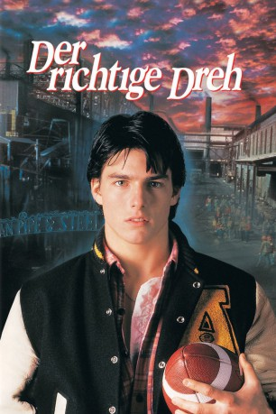
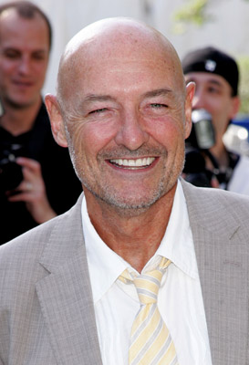
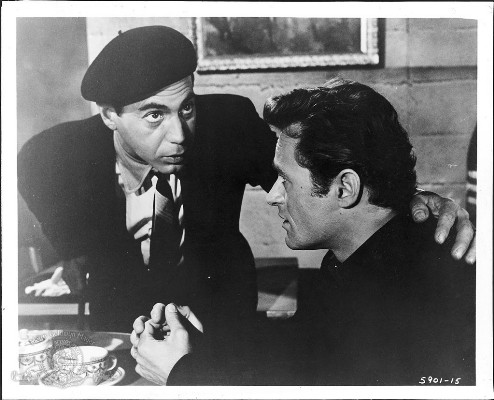

#10792 Der Richtige Dreh
Alternativ: All the Right Moves (Englischer Titel)
 
 IMDB-Wertung: 5.9 / 10
IMDB-Wertung: 5.9 / 10  Metascore: 62
Metascore: 62 
In Ampipe, einer tristen Stahlarbeiterstadt in Pennsylvania, sieht die Zukunft eines Teenagers alles andere als rosig aus. Entweder versauert man in der maroden Stahlfabrik, oder man sieht zu, dass man raus kommt. Auch Steve hat die Nase voll vom Kleinstadtmief. Er hofft auf ein Football-Stipendium an einem renommierten College, denn nur so hat er die Chance als Spieler Karriere zu machen. Er hat Talent, er hat Biss, er hat das Zeug zum Shooting-Star. Als er sich jedoch mit seinem Trainer anlegt, scheint das Spiel für ihn verloren zu sein, noch bevor es überhaupt begann. Steve ist kurz davor aufzugeben, doch mit Hilfe seiner Freundin steigt er erneut ins Spielgeschehen ein... und diesmal richtig!
Jahr: 1983
Dauer: 90 Minuten
FSK: 12
Land: USA Studio: Twentieth Century FoxTonspuren: DTS - ,
Untertitel: Deutsch,
Auflösung: 1080p (1920x1040) Größe: 12697 MB
Genre: Drama, Liebe, Sport
Regisseur: Michael Chapman
Drehbuch: Pat Jordan, Michael Kane
Soundtrack: David Campbell
Darsteller:
 Tom Cruise als Stefen Djordjevic
Tom Cruise als Stefen Djordjevic Craig T. Nelson als Nickerson
Craig T. Nelson als Nickerson Lea Thompson als Lisa
Lea Thompson als Lisa- Charles Cioffi als Pop
- Gary Graham als Greg
- Paul Carafotes als Salvucci
 Chris Penn als Brian
Chris Penn als Brian- Leon als Shadow
- Jonas Chaka als Mouse
- Keith Diamond als Fox
-  Terry O'Quinn als Freeman Smith
 Victor Arnold als Henry the Bartender
Victor Arnold als Henry the Bartender-  Dick Miller als Teacher in Auditorium
 Darren W. Conrad als Alexander #41 (uncredited)
Darren W. Conrad als Alexander #41 (uncredited) Mark Falvo als Football Player (uncredited)
Mark Falvo als Football Player (uncredited)- Sandy Faison als Suzie
- James A. Baffico als Bosko
- Mel Winkler als Jess Covington
- Walter Briggs als Rifleman
- George Betor als Tank
- Paige Price als Tracy
- Debra Varnado als Charlotte
- Donald A. Yannessa als Coach
- Kyle Scott Jackson als Sherman Williams
- Clayton S. Beaujon als Drunk in Bar
- William L. Stibich als Kurowski
- Mercy L. Rigby als Girl at Party
- Emma Floria als Angela
- Mary Mihaljevic als Woman at Wedding
- Dana Hoover als Friend #1
- Laurel Eatman als Friend #2
- Donald B. Irwin als Principal
- Darlene Dudukovich als Civic Teacher
- Valerie Zabala als Gina
- John W. Simkovic als Detective
- Bill Slivosky als Detective
- Greg Jacobs als Guard
- Thomas R. Boyd als Official
- Phillip Zdunczyk als Walnut Heights Center
- David Barckhoff als High school football player (uncredited)
- Sherri Taylor als Cheerleader (uncredited)
Datei: X:\1983\Richtige Dreh, Der (1983, FSK12, 1920x1040).mkv seit 08.03.2019
Festplatte: HD 1980-1986
 Es gibt insgesamt 35 Filme in der Gruppe '1983'
Es gibt insgesamt 35 Filme in der Gruppe '1983'